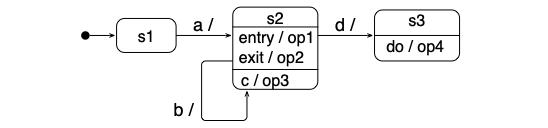
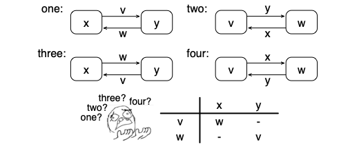

Question 1
What is the difference between normal states and pseudostates, like the initial state and choice states?
- Pseudo states are mutual exclusive to each other.
- Pseudo states are transient, i.e., the state machine does not wait in them.
- Pseudo states are only seldom used.
- Pseudo states are a shorthand notation for a structure of simple states.
Question 2
Which of the statements is true about internal transitions?
- An internal transition executes internal behavior, not visible outside the state machine.
- An internal transition starts and ends in the same state.
- An internal transition is drawn with the same notation as a transition that connects two states.
- An internal transition invokes entry and exit actions.
Question 3
The state machine below contains some actions. Only one of the four sequences of actions and triggering events is actually possible. Which?
- a, c
- a, d, op4
- a, op1, c, d, op4
- a, op1, c, op3, d, op2, op4

Question 4
Which of the elements in a label for a transition (that means, triggering event, guard, behavior) are optional?
- all (triggering event, guard, behavior) are optional
- the triggering event is optional
- only guards and behavior are optional
- when a guard is specified, there must also be a trigger
Question 5
Look at the picture below.
- two!
- three!
- four!
- one!

Question 6
Which of the following statements is true?
- Entry and exit actions are forms of internal transitions.
- A state can declare any number of entry or exit actions.
- Transition can take a long time.
- The choice pseudostate has exactly one outgoing and any number of incoming transitions.
Question 7
Assume the state machine below is in state A, and x has the value 5. What happens when the event e3 happens?
- x keeps its value of 5.
- The entry action resets x to 2.
- Nothing happens.
- The exit action increases x to 6.
Question 8
What about self-transitions?
- A self-transition can have different source and target states.
- A self-transition always triggers an entry action.
- A self transition is triggered by the termination of an action.
- A self-transition is drawn with the same notation as a transition that connects two different states.
Question 9
What kind of behavior do state machines present?
- State machines specify complete behavior, i.e., all possible sequences of events.
- State machines only show selected traces of events.
- State machines only specify sequential behavior without choices.
- State machines specify concurrent partial behavior.
Question 10
Which statement is true about choice states?
- Choices should have an outgoing else branch.
- Choices only model different traces, not decisions like if-statements do.
- Choices states must have incoming transitions with else branches.
- Choices can originate from internal transitions.